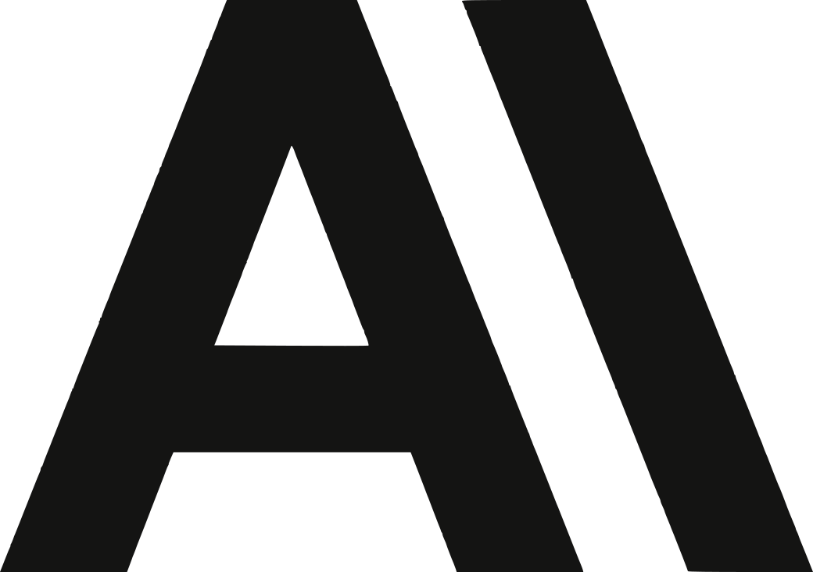

t11s@mit.edu
I like making computers go fast.

XII often go by the pseudonym Transmissions11, or t11s for short, online.
2As of Fall 2026, I am on a de facto leave of absence for the Anthropic Fellows Program.